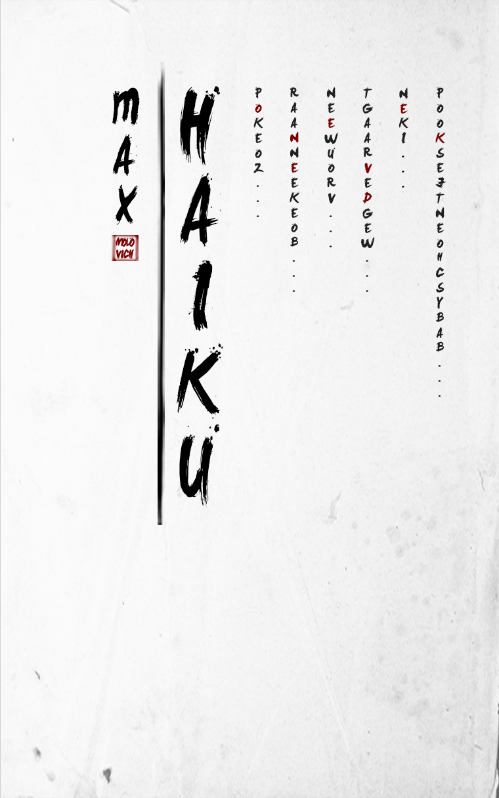
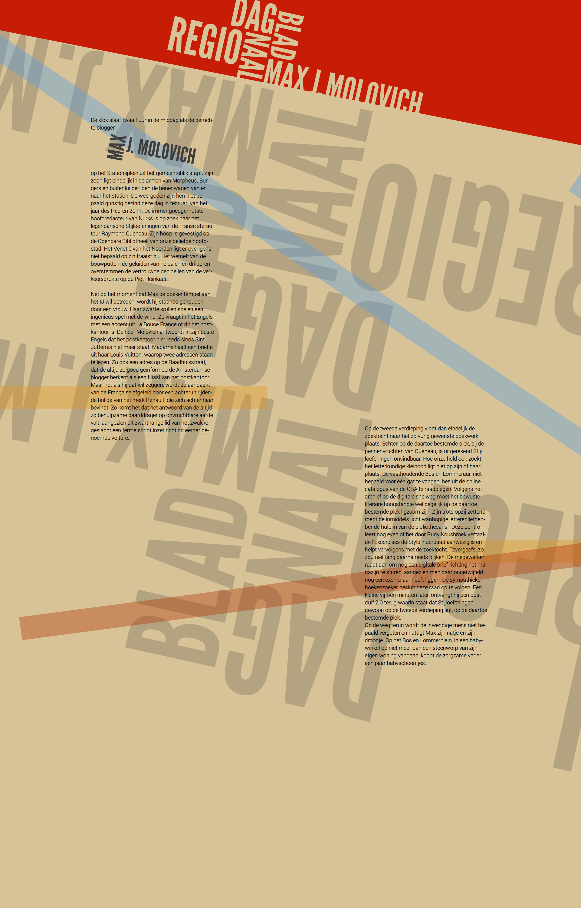

Over Max J. Molovich
Max J. Molovich. Erkend miskend genie. Initiatiefnemer en Grote Leider van Nurks. Als gematigd taoïst (één samenvatting van een Belangrijk Boek gelezen) is hij van mening dat er weliswaar niet te ontsnappen valt aan de Wil van de Wereld.
Maar dat je best wat kunt doen aan de manier waarop de wereld haar wil aan ons, eenvoudige stervelingen, opdringt. Dat doet zij namelijk zo nu en dan ronduit onbeschoft. Max heeft zich tot taak gesteld de wereld waar het kan tot de orde te roepen. Naast Nurks schrijft hij op AT5 en werkt hij als tekstschrijver voor Meijer Verwijk Kleverman.
Kijk
Bekijk meer
-

Haiku
-

Droom
-

Dit is een titel die langer is dan 1 regel
Lees
-
“Door de interessante vormgeving zie ik mijn verhalen echt tot leven komen.”
Max Molovich - Schrijver
-
“Mijn studenten weten mij elke keer weer te verrassen.”
Christiaan van Dokkum - Docent vormgeving, jaar 2
Een verhaal bestellen?
Bestel je favoriete verhaal in boekvorm
VUL JE E-MAILADRES IN:
E-mailadres
VUL JE VOOR EN ACHTERNAAM IN:
Voornaam
Achternaam
VUL DE NAAM VAN HET VERHAAL IN:
Naam verhaal
Soort uitgave
VUL JE BEDRIJFSNAAM IN:
Bedrijfsnaam
VUL JE TELEFOONNUMMER IN:
Telefoonnummer